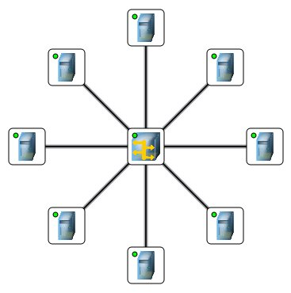
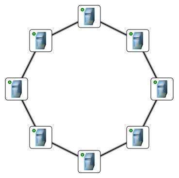

Topology
There is an infinite number of ways to connect computers. Each connection - new path for the data. Network topology - the geometrical
form and physical layout of computers under the ratio to each other. The network topology allows to compare and class various networks.
Select three main topology: a star, a ring and the bus.
Star
Base topology of a computer network in which all computers of a network are attached with central office (usually network switch),
forming a broadcasting segment of a network.
advantage
- Failure of one workstation is not mirrored in operation of all network as a whole;
- Good scalability of a network;
- Easy search of faults and breakaways in a network;
- High efficiency of a network (under condition of correct designing);
- Flexible possibilities of administration.
lacks
- Failure of the central switch will turn back network refusal (or a network segment) as a whole;
- For network laying frequently it is required more cable, than for the majority of other topology;
- The finite number of workstations in a network (or a network segment) is limited by quantity of ports in the central hub.

Bus
Initially "bus" represented the common cable to which are connected all Workstations. On the cable ends there are terminators,
for reflexion preventing. Later in this topology such network devices as HUB (hubs) have entered. Hubs represent multiport repeaters
and do not change topology basis though visually given connection is similar to topology "star".
The main problem in topology "bus" is collisions - arising at collision of signals in the physical environment.
advantage
- Small installation time of a network;
- Cheapness (it is required less cable and network devices);
- Simplicity of customization;
- Workstation failure is not mirrored in network operation;
lacks
- Any malfunctions in a network as a cable breakaway, terminator failure completely delete operation of all network;
- Difficult localization of faults;
- With addition of new workstations productivity of a network falls.
Because of the similarity with topology "star", "bus" wasn't explicitly reflected in the program, but you can see how it works on the
example above.
Ring
Base topology of a computer network in which workstations are connected sequentially to each other, forming the closed network.
The given topology is a little extended in local area networks and at present in program NetEmul practically it is not realised.
advantage
- Absence of collisions and therefore predicted capacity;
- Possibility of steady operation without essential falling of a transfer rate.
lacks
- Failure of one workstation, and other malfunctions (cable breakaway), are mirrored in working capacity of all network;
